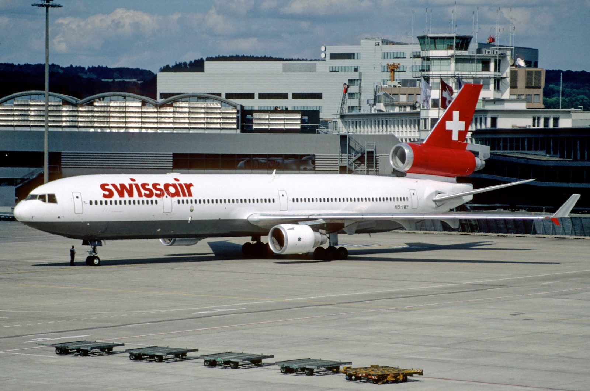
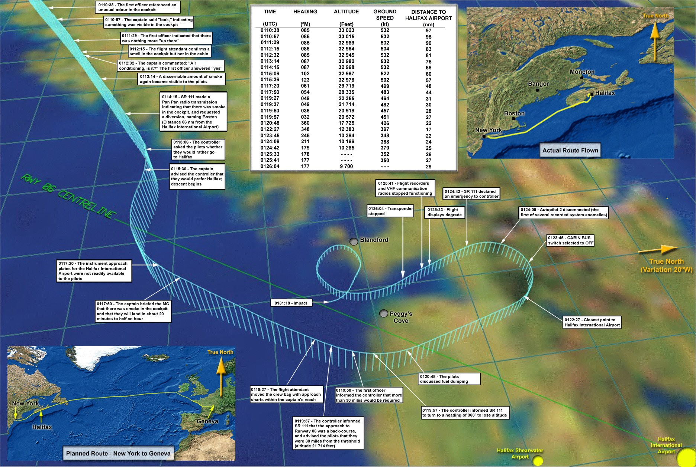
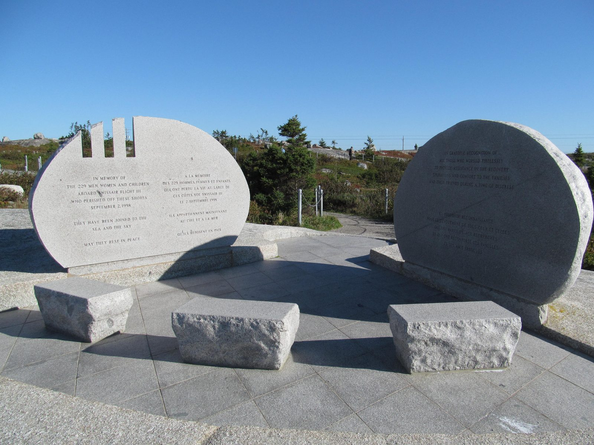

An hour out of New York, two experienced pilots smelled something faintly wrong in the cockpit. They did everything the way they had been trained to do it: identified the problem, called it in, chose a diversion airport, ran the checklist. Twenty-one minutes after that first smell, everyone aboard was dead. The fire had been burning above their heads the entire time, in a space nothing on the flight deck could see.
Every time in this case file is Atlantic Daylight Time, the local time in Nova Scotia where the flight ended. The official investigation and the flight recorders are timestamped in UTC, three hours ahead. Both are given where the difference matters.

Swissair Flight 111 was the airline's flagship evening run: New York to Geneva, an overnight hop popular with United Nations staff, bankers and diplomats. It was nicknamed the “UN Shuttle.” On the evening of September 2, 1998, it pushed back from Kennedy Airport at 20:18 New York time with 215 passengers and 14 crew aboard.
In command was Captain Urs Zimmermann, 49, a Swissair training captain with more than 10,000 flying hours. In the right seat was First Officer Stefan Löw, 36. Both men were, by every account in the investigation, exactly the crew you would want in this situation: methodical, unhurried, and well-drilled. Nothing either of them did that night has ever been characterised by investigators as an error of skill or of nerve.
The aircraft was a McDonnell Douglas MD-11, registration HB-IWF, delivered new to Swissair in 1991. It climbed out over Long Island, turned northeast up the coast, and settled into cruise at 33,000 feet on a routing that would take it past Nova Scotia and out over the Atlantic.
First Officer Löw remarks on an unusual odour in the cockpit. Nineteen seconds later Captain Zimmermann says “look,” indicating something has become visible. It is not yet obviously smoke.
A flight attendant confirms the smell is present on the flight deck but not in the cabin behind it. Twenty seconds later the captain asks whether it is the air conditioning. The first officer answers yes. This is the reasonable conclusion, and it is wrong.
A discernible amount of smoke becomes visible in the cockpit for a second time. Whatever this is, it is not clearing on its own.
Flight 111 transmits a Pan Pan — the international radio call for urgency, one step below a Mayday — reporting smoke in the cockpit and requesting a diversion. The crew names Boston, roughly 300 miles behind them.
Moncton air traffic control offers Halifax, only 66 miles away. The captain accepts. The descent begins. From here the aircraft has sixteen minutes left.
The approach plates for Halifax are not readily to hand — this was an aircraft routed for Geneva, not Atlantic Canada. A flight attendant is asked to move the crew bag containing the charts within the captain's reach.
The controller advises that Halifax's Runway 06 requires a back-course approach and that they are 30 miles from the threshold — at 21,714 feet, far too high. The first officer says they need more than 30 miles. They are turned north to lose altitude.
The crew discusses dumping fuel. The MD-11 is far above its maximum landing weight after only an hour of a transatlantic flight. See The Checklist below.
The CABIN BUS switch is selected off, part of the smoke drill: isolating electrical loads one at a time to find the source. Twenty-four seconds later Autopilot 2 disconnects on its own. It is the first of a rapid cascade of system failures.
Flight 111 upgrades from Pan Pan to a full emergency. This is the last transmission anyone on the ground receives from the aircraft.
The flight data recorder stops. One second later, the cockpit voice recorder stops. Both lose their power supply at roughly 10,000 feet. See The Silence.
Flight 111 strikes the Atlantic about five nautical miles southwest of Peggys Cove, Nova Scotia. All 229 people aboard are killed instantly.

This is the part of the case that changed aviation, and it is the part that is most often told wrong. The crew of Flight 111 did not waste time. They followed a procedure that had been written, approved and trained for exactly this situation. The procedure was the problem.
Smoke of unknown origin is one of the hardest emergencies in aviation, because the first task is not to fight the fire — it is to find it. The Swissair smoke drill, like most airline smoke drills of the era, worked by elimination: isolate electrical busses one at a time and see whether the smoke stops. It was a long checklist. Running it properly took time.
At the same time, the crew were dealing with an aircraft that weighed far too much to land. An MD-11 an hour into a transatlantic crossing is carrying most of a full fuel load. Landing at that weight risks collapsing the gear or overrunning the runway. So the crew did what the numbers demanded: they turned away from Halifax and out over St. Margaret's Bay to dump fuel, and they began the dump.
Every one of those decisions was correct according to the training and procedures in force that night. Together, they cost the aircraft the minutes it did not have. Investigators would later conclude that the fire had almost certainly already been burning when the first odour was noticed, and that by the time the Pan Pan call went out there may have been no survivable outcome left at all.
…and we are declaring emergency now, Swissair one eleven.
— The last transmission received from Flight 111, 22:24 ADTNothing on the MD-11's flight deck monitored the space above the cockpit ceiling. There were no smoke detectors in that void, and none were required. The crew's entire picture of the fire consisted of what they could smell, what they could see drifting into the cockpit, and — in the final ninety seconds — the order in which their instruments began to fail.
Above and behind them, insulation blankets sheathed in metallized polyethylene terephthalate — a material certified as fire-resistant under the standards of the day — were burning and spreading flame across the ceiling. The fire was consuming the same class of wiring bundles as it went, which is why the failures arrived in a cascade rather than one at a time.
At 22:25:40 the flight data recorder stopped. At 22:25:41 the cockpit voice recorder stopped. Impact came at 22:31:18. For five minutes and thirty-seven seconds, the aircraft was still flying and nothing at all was being recorded.
That gap is why this investigation took four and a half years. With no recorder data covering the end of the flight, the Transportation Safety Board of Canada had to rebuild the final minutes physically — from the aircraft itself. More than two million pieces of wreckage were recovered from the seabed of St. Margaret's Bay, and a partial reconstruction of the forward fuselage was assembled in a hangar at CFB Shearwater. Investigators mapped the fire by reading heat damage across thousands of individual fragments: which wires had arced, which materials had melted, which direction the soot had travelled.
It became the largest and most expensive transportation investigation in Canadian history. It is also the reason the case file is as detailed as it is: almost everything in the sections below was established by physical evidence, because the recordings simply were not there.
Peggys Cove is a fishing village of a few dozen houses. On the night of September 2, 1998, its boats were the first vessels on scene.
Local fishermen took their boats out into the dark within minutes of the impact, before any official rescue effort could be organised. They found no survivors. What they found instead stayed with that community permanently, and the strain on the villagers and on the Canadian Coast Guard, navy and RCMP personnel who worked the recovery became its own long aftermath.
Recovery operations continued for more than a year. The seabed was trawled and dredged; the wreckage was barged ashore, catalogued and reassembled. Identification of the victims took months of forensic work, and some remains were never individually identified. Those are interred at Bayswater, on the far side of the bay from Peggys Cove.
Nova Scotia built two memorials, one on each side of the crash site. The Whalesback stands on the granite headland about a kilometre north of Peggys Cove, looking out at the water where the aircraft came down.

In memory of the 229 men, women and children aboard Swissair Flight 111 who perished off these shores September 2, 1998. They have been joined to the sea and the sky. May they rest in peace.
— Inscription, The Whalesback memorial, Peggys Cove, Nova ScotiaThe Transportation Safety Board of Canada released report A98H0003 on March 27, 2003, four and a half years after the crash. Its central finding is not about a broken part. It is about what the aircraft was made of.
The TSB found that certification standards for material flammability were inadequate: they permitted materials that could be ignited and could sustain and propagate a fire. The thermal acoustic insulation blankets covering the ceiling void were sheathed in metallized polyethylene terephthalate (MPET). Once something ignited them, they carried the fire across the ceiling. This finding, not the ignition source, is the heart of the report.
Investigators found evidence of electrical arcing in wiring associated with the in-flight entertainment network. But the TSB was careful: it could not determine whether that arc was the “lead event” that started the fire. This is the single most misreported detail of the case — see the note at the end of this file.
The IFEN was a seat-back gaming and shopping system — movies, gambling, duty-free — installed under a Supplemental Type Certificate rather than as part of the original aircraft design. It ran on Windows NT, added well over a tonne of weight, and drew power from a cockpit-area bus. The TSB found the approval process for that installation had not adequately assessed how it integrated with the aircraft's existing systems.
The smoke procedures in use assumed a problem that could be diagnosed by elimination while the flight continued. They did not assume a fire already spreading out of sight. Nothing in the drill told a crew that the correct response to smoke of unknown origin is to point the aircraft at the nearest runway immediately and sort everything else out on the way down.
Aircraft certification standards for material flammability were inadequate in that they allowed the use of materials that could be ignited and sustain or propagate fire.
— Transportation Safety Board of Canada, Report A98H0003, Finding as to CauseThe material science is settled and the fixes are in place. What people still argue about is the twenty-one minutes.
This is the question the case is famous for, and the honest answer is that nobody knows. The TSB's own analysis concluded that by the time the crew were aware of a serious problem, the fire had progressed far enough that a successful landing was unlikely. What is certain is that the diversion, the fuel dump and the elimination checklist together consumed the time, and that the procedures of the era actively directed a crew toward all three.
Because at 22:14 that was the accurate call. Pan Pan signals urgency; Mayday signals immediate danger to life. The crew had an odour and intermittent smoke, no fire warning, and every instrument working normally. They upgraded to a full emergency the moment the aircraft began failing around them. The radio call was not the problem — the information available to make it was.
Not definitively, and the TSB never said so. Arcing was found in IFEN-associated wiring, and that system was an obvious candidate: it was an aftermarket installation drawing significant power near the area where the fire started. But the report stops short of naming it as the lead event, and honest retellings of this case have to stop there too.
Unknown, and permanently so. The recorders were dead. Wreckage analysis established that the fire continued to spread and that the crew progressively lost flight instruments and control systems. Beyond that, the final minutes of Flight 111 are the largest deliberate blank in this archive.
Swissair 111 is one of the small number of accidents that visibly changed what aircraft are built from. If you have flown on a widebody in the last twenty years, you have flown behind the fixes.
Regulators worldwide ordered the identification and replacement of metallized polyethylene terephthalate insulation blankets across thousands of aircraft, one of the largest retrofit programmes in commercial aviation. MPET blankets are no longer installed.
The old Bunsen-burner test that had certified those blankets was replaced with a far more demanding radiant panel test that better reflects how a real in-flight fire behaves. Material that passed the old standard routinely fails the new one.
Airline smoke and fire checklists were rewritten across the industry to put diversion first rather than last. The modern instruction for smoke of unknown origin is to get the aircraft on the ground at the nearest suitable airport immediately, and troubleshoot on the way.
The Supplemental Type Certificate process — the route by which the entertainment system reached this aircraft — was tightened, with far more scrutiny of how an added system interacts with the electrical architecture it is spliced into.
Peggys Cove, Nova Scotia
They have been joined to the sea and the sky.
Aspotogan Peninsula, Nova Scotia
Where the unidentified were laid to rest.
Every fact in this case file was cross-referenced against at least two independent sources, anchored by the official government investigation. All links open in a new tab.
The Transportation Safety Board of Canada's complete final report on Swissair Flight 111, including all findings as to causes and contributing factors, and the full safety recommendation record.
The FAA's official case summary and safety-lessons page, including the flight path reconstruction reproduced in this case file.
Canada's public broadcaster on the recovery, the community of Peggys Cove and the long aftermath for the people who worked the site.